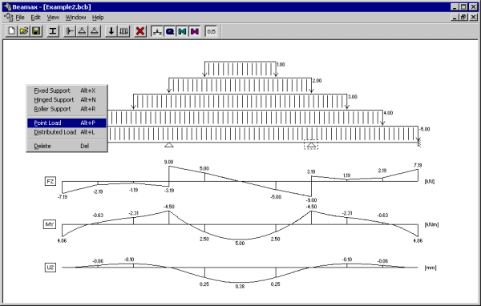

OverviewBeamax is an application for graphically editing and analyzing continuous beam structures. The program was developed using the Microsoft Foundation Classes (MFC). Fixed, hinged and roller supports and point and distributed loads are supported. A Component Object Model (COM) interface allows using different components for analysis. Screenshot |